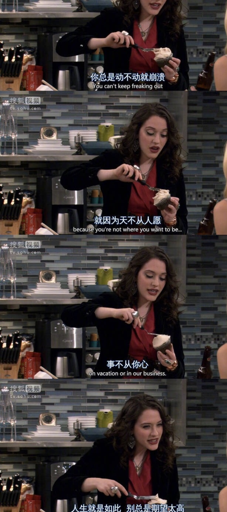
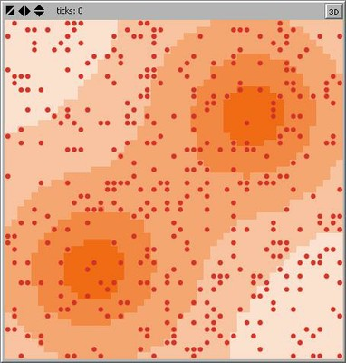
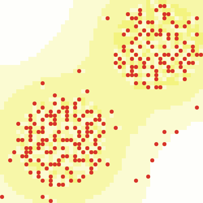
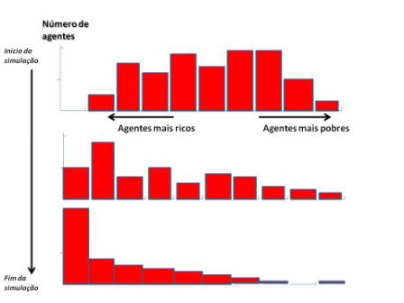

养病中的扶墙呓语
王福强 著
前阵子大虫还问我病了之后是否有很多感触和想法，其实说有也有，说没有也没有，因为很多东西都看开看淡了，但配合自身经历去解读一些东西却是很有意思的一个事情…
坦然面对一切不确定性
一体两面， 什么东西都没有绝对的好与坏， 不确定性对有些人来说是痛苦的，对有些来说则是刺激和愉悦的， 而在创业的过程中， 这些都会体会到， 也可以帮助一个人成长。
很多优秀的专业人士的管控思维或者控制欲是很强的， 这不光表现在工作中，也表现在生活中。我记得南京一位朋友曾经说过， 他做架构的工作习惯和思维往往会带到生活中，表现为对孩子的严格管控， 其实， 这样的情况不一定是最佳的状态。控制与管控思维在一定程度上可以帮助我们取得某个阶段的优秀成果，但这只是成长的一个阶段，而不是全部。
如果不能逐步打破这种控制与管控思维， 当不期而来的一系列不确定性事件发生的时候， 往往会让自己手足无措。 这个时候，就会倒逼你去反思并学着接受和适应，然后慢慢的， 你就可以从不确定性给你带来的痛苦中走出来， 迈向成长的下一个阶段， 即接受不确定并享受其带来的一系列刺激与惊喜。
当然， 这也不算终结， 成长是无止境的， 当你可以接受不确定性给你带来的两面性之后， 就可以坦然的逢山开路, 遇水搭桥了， 因为如果在这些不确定性之前，你只会抱怨， 其实并没有什么卵用， 反而会让自己和周围的人境况更加糟糕，还不如多想办法去做点儿什么事情反而更好些，毕竟方法总比困难多！
从控制欲/管控思维到遭遇不确定性的痛苦， 再到接受不确定性并享受其带来的刺激与惊喜，最后再坦然面对现实， 这个打怪升级的过程才是hot path， 没必要纠结于一个点或者阶段的状态。
不抱怨，不强求
日常中，我会看到很多人天天的各种抱怨，就会觉得很搞笑。
其实抱怨不会给你带来你想要的东西，反而会恶化，让事情朝着你预想的相反的方向发展。人生在世，有些事情你是可以把握的，有些事情你是无能为力的，对于后者，你能采用的最好的策略就是接受这个现实，然后再看能做什么事情让这种现实和影响对自己有利。但有些人往往只会一味的“强求”，觉得天下老子第一，什么事情都得照着自己的想法和预想来，最终却搞的自己苦不堪言，周围的人也一起受其影响，这是比较傻瓜的做法，一个乐观的聪明人不应该这样。

其实就跟福耀玻璃的曹德旺说的那样， 针对社会中的各种现象， 不要去抱怨，因为你也是参与其中的一员，造成今天的局面，你也有一部分责任， 没有必要去抱怨。 看到曹德旺大智若愚的样子， 你我难道不应该反思吗？
这其实也是我这一两年不愿发太多文字、说太多话的原因， 虽然我自诩为“书生”，但我现在确实最讨厌书生一类人的人，因为天天耍嘴皮子，却没有动作去做一些事情让事情有所改变，包括很多所谓的大V，一线经济学家，以及其他所谓的高端人士，其实没有什么好追捧的， 很多有智慧的人都是大音希声的， 叫唤声音大的，往往并非表面看起来的那么智慧。
不抱怨，不强求， 踏踏实实做一些自己能做的事儿， 才是最好的！
一个人心态好，态度好，不抱怨，不是他或者她遇到的一切都事事顺心、心想事成，而是他或者她学会了接纳，然后去改善，最后让自己满足，他或者她不是与生俱来就一辈子运气满满，福气满满，人生不如意事十之八九，大部分人都是活得不易，凭什么你就是那极少数人呢？ 抱怨其实是最没有用的东西，闭上嘴，迈开腿，才是正确的方向选择。
波动，成本与安全垫
我现在算是深刻体会到了：其实，人生处处是成本，不考虑成本，你就是找死， 你搞企业，搞组织也是找死。
这让我想起之前在盈动资本的一次内部分享上”大象”分享的那个糖人实验（the sugarscape），当所有人出生都是随机分布的时候， 最终n个回合下来，财富和人数总会趋向于二八比例的马太效应分布，而如果我们关注过程的话，就会发现，最悲剧的是那些起点在贫糖区，离富糖区远的人，一步走错， 基本就满盘皆啰嗦， 本就没有多少糖，走错了方向， 糖消耗完也就game over了。



虽然是简化的一个实验，但却简单明晰的帮助我看清了很多东西， 我不想说运气和选择之类的东西，我想说的其实是试错成本。
如果有些东西你没有把控能力， 那么，就应该先去加强自己可以把控的地方，比如， 小成本试错，少消耗点儿糖，让自己存活时间更长，可以试错的次数更多，运气这种东西其实不能强求，只能算“非经常性收入”，别奢望它频繁的眷顾你，偶尔帮你锦上添花， 就已经可以谢天谢地了。
很多时候，你看的大方向是对的， 你的选择也是对的，但往往你却走不到终点，因为你没有抗得住过程中的波动！
说个比较搞笑的事情，阿里巴巴每次200+的价格的时候，我都是尝试做空，但每次都被波动搞死，有一次甚至被爆仓，但中期来看，你也看到了， 现在阿里的价格是160+， 如果我能多留些保证金，多一些坚持， 那么，也不至于每次都在阿里巴巴这个股票上亏钱，然后让自己看起来像个傻逼…
虽然我们天天讲不要以静态的眼光看问题，但也不能以线性的思维看问题，任何活动的事物都是有生命力的， 那也意味着就会有波动： 心电图会有波动，K线图会有波动， 企业运营期间会有波动， 一国之经济更会有波动，你自己的生命周期内更会有各种动荡和波动。 所以我们要对这些波动有所认识，有所准备，也就是多攒“糖”，多给自己留些安全垫， “广积粮，缓称王”，毕竟， 目标远大， 方向正确，也得抗过了路上的波动才行啊~
年轻是否是财富， 因人而异
很多“二代”相对于其父辈，从谈吐举止到做人的格局上都相差很多。
但是我们不能因此就鄙视他们，毕竟，相差了几十年的历练， 谁也说不清楚后面几十年他们会怎么样，最起码人家出生在富糖区， 远比大多数人幸运…
我们一直说年轻就是财富，那是因为年轻人还有很长的时间去试错，去折腾，去撞南墙，去成长。很多道理，只有自己经历过了，摔打的疼了，自己才会长记性，才会反思，才会成长。但往往也有很多人会随着时间的流逝而没有成长，并沦为ordinary大多数，这有自身的原因，也有外围的因素，只不过抱怨外围的因素不会让自己过的更好、活得更饱满，所以还是自强不息比较靠谱，运气只能加成，不能强求。
有得年轻人可以一飞冲天，有的则熬了几十年还是个ordinary，冥冥之中一只看不到的手，可能在左右着这些不同的走向和差异。糖人实验(The Sugarscape)当然可以算一个简化版的解释，但更为复杂的，则只能诉诸于老天爷了。 ;0)
「为AI疯狂」星球上，扶墙老师正在和朋友们讨论有趣的AI话题，你要不要⼀起来呀？^-^
这里
- 不但有及时新鲜的AI资讯和深度探讨
- 还分享AI工具、产品方法和商业机会
- 更有体系化精品付费内容等着你，加入星球(https://t.zsxq.com/0dI3ZA0sL) 即可免费领取。(加入之后一定记得看置顶消息呀！)

存量的时代，省钱就是赚钱。
在增量的时代，省钱其实是亏钱。
避坑儿是省钱的一种形式，更是真正聪明人的选择！
弯路虽然也是路，但还是能少走就少走，背后都是高昂的试错成本。
订阅「福报」，少踩坑，少走弯路，多走一步，就是不一样的胜率！